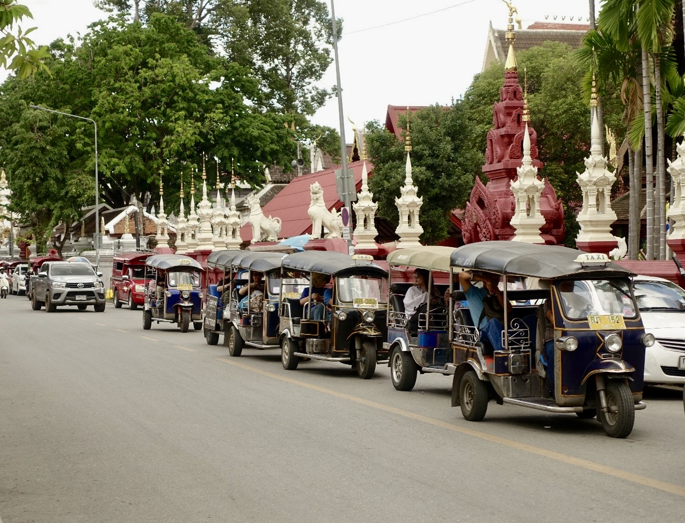
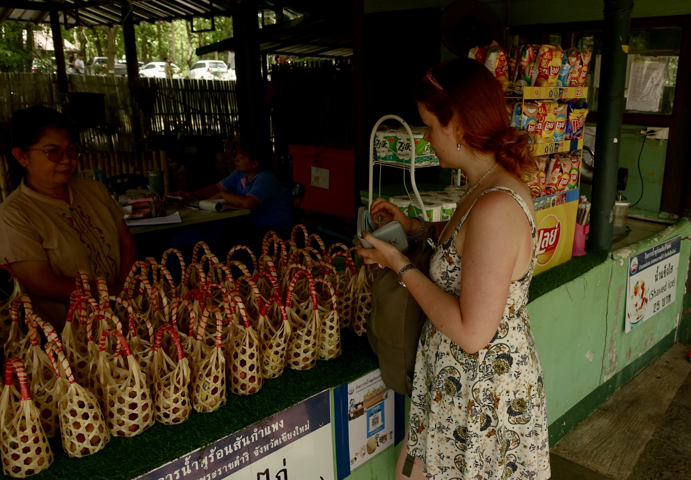
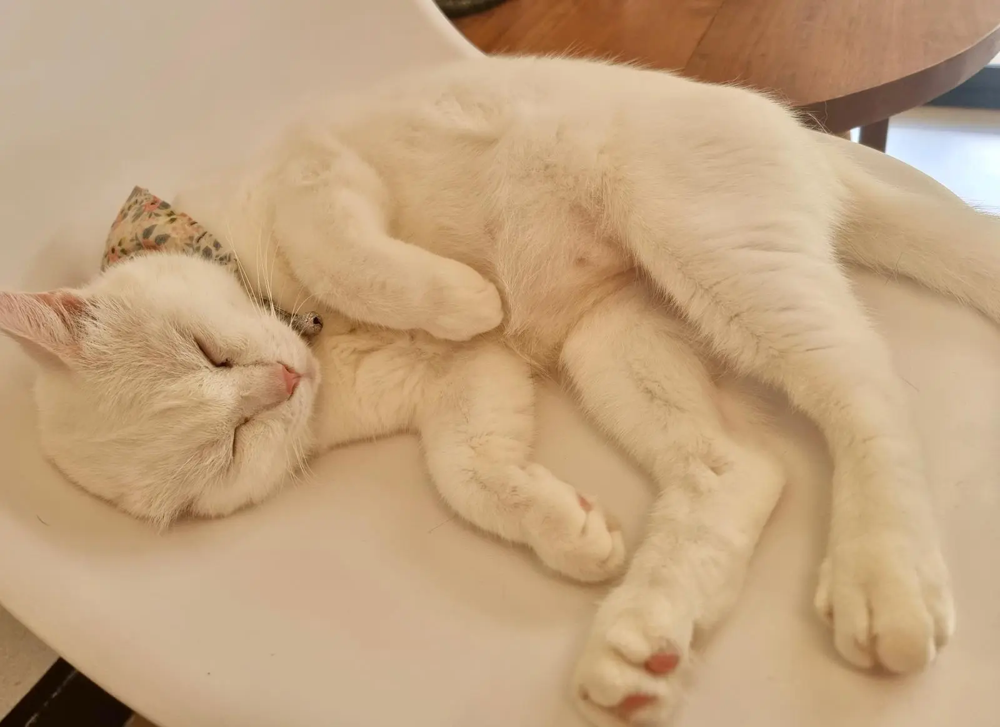
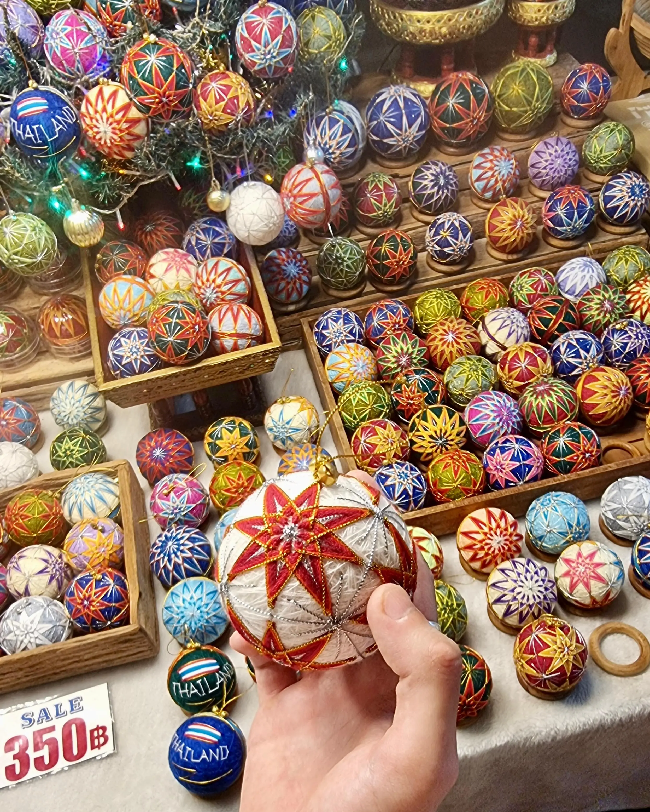

Die Busfahrt zurück nach Chiang Mai habe ich - dank der doppelten Dosis Reisetabletten - gut überstanden. Der Bus war super eng, sodass Julius und mir die Beine eingeschlafen sind, aber der Busfahrer hat uns trotz waghalsiger Überholmanöver in Serpentinen sicher zum Ziel gebracht. Ein paar Mal sind wir frontal beim Überholen auf entgegenkommende Autos zugefahren, sodass der Fahrer fast eine Vollbremsung machen und wieder einscheren musste. Irgendwann habe ich einfach die Augen zugemacht, dann war der Fahrstil in Ordnung.

Ankommen in Chiang Mai war schön - der bekannte Stadtgraben, die bekannten Straßenzüge - und unser neues Hotel, das Yindee Stylish Guest House, hat zwar keinen Kühlschrank im Zimmer und keinen Föhn, ist aber sehr gut gelegen und nett und sauber eingerichtet. Unsere Rezeptionistin sieht aus und verhält sich wie Joo Dee aus der Animationsserie Avatar, was etwas beunruhigend ist („Es gibt keinen Krieg in Ba Sing Se“).
Wir wohnen außerdem mehr oder weniger direkt neben einem Food Market, auf dem von Thais authentisch gekochte Gerichte aus allen Herren Ländern verkauft werden. Julius hat sich zur Aufgabe gemacht, von fast allen Ständen etwas zu bestellen. Also gab es: koreanisches frittiertes scharfes Hähnchen (zweimal, weil so lecker), drei Stücke Kuchen (weil es drei zum Preis von zwei gab und mir die Bäckerin leid tat, da niemand bei ihr etwas gekauft hat), ein Taco (zu teuer und nicht gut), ein Bier, Cola und einen Crêpe mit Nutella. Dementsprechend ging es uns auch danach. Wir sind noch etwas durch die nächtlichen Straßen gelaufen, um dann ins Bett zu fallen.
Am nächsten Tag sind wir spät aus den Federn gekommen, um uns einen Roller zu mieten, mit dem wir dann eine Stunde nordöstlich von Chiang Mai zu heißen Quellen gefahren sind. Das mag erst mal ironisch klingen, bei 34 Grad zu heißen Quellen zu fahren, war aber sehr schön. Ich habe das große Glück, Beifahrer-Prinzessin zu sein und mich bei 70 km/h über thailändische Landstraßen kutschieren zu lassen, während Julius uns sicher zwischen Trucks und anderen Rollern hindurch fährt.
Bei den Quellen angekommen, bezahlt man pro Person 2,50 € und kann sich ewig auf dem Gelände aufhalten. Das Highlight dabei ist, Eier in dem heißen Wasser zu kochen, was wir natürlich direkt ausprobiert haben. Dazu gibt es Instant-Nudelsuppe und Cola, später holen wir uns noch ein Eis.

Die restliche Zeit liegen wir auf einem als Liege aufgespannten Netz neben dem kleinen künstlich angelegten Bach, durch den 45-50 Grad warmes Wasser fließt, lesen Reiseführer oder schauen Videos und beobachten kleine Streifenhörnchen, die auf den Bäumen über uns durch die Gegend flitzen. Ich schaffe es sogar, meine Füße ins heiße Wasser zu halten. Der Vorteil ist, dass einem danach die heiße Luft ganz kühl vorkommt.
Kurz vor Schließung des Parks gönne ich mir noch eine sehr günstige, sehr gute Thai-Massage. Sie kostet 3 €, plus geringschätzende Blicke auf mein knappes Kleid, weswegen ich dann eine extra Baumwollhose im Obelix-Stil anziehen muss.
Dieser "ruhigere" Tag war genau das, was wir brauchten. Selbst wenn wir in den letzten Tagen eh keine großen Abenteuer hatten, merkt man doch die lange Reise und die Erschöpfung von all den neuen Eindrücken, die sich langsam einschleicht. Abends wird noch mal auf dem Markt gegessen, und das war's dann auch schon.
Auch wenn wir uns vorgenommen hatten, in Chiang Mai noch die Sticky Waterfalls zu besuchen, eine Art Wasserfall, der aus abgewaschenen Steinen besteht, und noch einmal den Berg zum Doi Suthep mit dem Roller hochzufahren, geben wir den Roller mittags ab und verbringen den restlichen Tag in der Stadt.
Wir haben ein Katzen-Café entdeckt, in dem wir für 3 € ein Getränk und eine Portion Katzen-Snacks bekommen, mit denen wir uns die Liebe der „Mitarbeiter“ erkaufen können.

Neun Katzen lungern in dem Café herum, spielen, putzen einander oder liegen in den Schlafplätzen aus Plexiglas, in denen man die kleinen Katzenpfoten wunderbar sehen kann. Die meisten Katzen sind nur sechs Monate alt und haben kahle Bäuche von der Kastration. Trotzdem sind sie munter und reißen uns auch gerne mal den kleinen Teller mit Leckerlis aus der Hand oder benutzen einen als lebendigen Kratzbaum, den es zu erklimmen gilt. Julius muss ich die Leckerlis abnehmen, weil es dann doch ein bisschen zu viel Katzenkontakt ist.
Wir verbringen hier gut über eine Stunde und streicheln die Viecher. Auf dem Nachhauseweg kommen wir an einer deutschen Falle vorbei: einem Bäcker mit Roggenbrot. Natürlich werden wir direkt in die Höhle gelockt und umgarnt von knusprig gebackenem Brot. Es gibt kein Entkommen mehr. Wir kaufen zwei riesige Vollkornbrötchen und vier Kekse. Die Falle hat funktioniert.
Das Mittagessen besteht komplett aus gesalzener Butter von 7 Eleven und einer Pepsi Cola, die wir auf der Terrasse des Hotels verdrücken. Ein wunderbarer Nachmittag.
Nach einer Mittagspause gehen wir noch einmal über den Samstags-Nachtmarkt außerhalb der Stadtmauern, wo es ein einziges Fress- und Konsumgelage gibt, an dem wir natürlich auch teilhaben. Es gibt sogar Weihnachtsbaum-Dekoration (oder zumindest vermuten wir das) aus Stoff zu kaufen! Julius kauft sich eine Mini-Okarina, die man gut benutzen kann, um ein Zugabteil zu räumen oder den Leuten noch mehr auf die Nerven zu gehen als eine vierköpfige Familie mit Kleinkind.

Zu essen gab es einen Avocado-Shake, der eigentlich nach nichts geschmeckt hat, tolles Sushi (ungekühlt, aber wir leben noch) und thailändische Pfannkuchen, die knusprig gebraten und mit süßem Eischnee gefüllt werden.
Es ist schade, darüber nachzudenken, dass das unser letzter Abend im Norden ist. Die Hälfte des Urlaubs haben wir bis jetzt hier verbracht, ein Viertel unseres Monats in Thailand. Die Zeit war schön, auch wenn wir die letzten Tage nicht besonders viel gemacht haben.
Morgen geht es auf nach Süden, mit dem Flugzeug nach Krabi, an der Westküste Thailands.